Everything you can do as a creator
Find what you want to do, follow the steps. Every section works on its own, so you never need to read this front to back.
Get started
Signing in, putting the app on your phone, and knowing where things are. Do these once and you're set.
Sign in for the first time
The app is invite only. You sign in with the Google account (email) the team invited.
- Open proptracker.arbcreative.co in Safari (iPhone) or Chrome (Android).
- Tap Sign in with Google.
- Google asks which account to use. Pick the exact email you were invited with.
- You land on the Chat. That's your home.
Nothing happens when I tap Sign in with Google
This almost always means the link opened inside another app (Instagram, Messenger, Gmail…). Google blocks sign-in there.
- If the app says Open this page in Safari or Chrome, tap Copy link, open Safari or Chrome, paste it and go.
- Google's page opens blank or closes right away? Turn off your ad blocker or content blocker for this page (Safari: tap aA → Turn Off Content Blockers), and don't use a Private tab.
- Still stuck? Tap Trouble signing in? Sign in another way on the sign-in screen.
It says "You're not on the list yet" (wrong Google account)
You signed in with a different Google account than the one you were invited with.
- Tap Use a different Google account.
- Pick (or add) the email you were invited with.
- Already inside the app with the wrong account? Go to More → Sign out, then sign in again and choose the right one.
Put the app on my phone's home screen
It then opens like a normal app. On iPhone, notifications only work when you open the app from this icon.
- iPhone: open the app in Safari, tap Share (the square with an arrow), then Add to Home Screen, then Add.
- Android: open it in Chrome, tap ⋮ → Add to Home screen.
- From now on, open the app from the eagle icon.
Know what each tab does
There are four tabs at the bottom. Almost everything starts in the Chat.
- Chat: your home. Type what you need. Your next shoots and anything you need to do show here.
- Calendar: a month of free filming spots at the houses. Tap a day to book.
- Props: every prop and costume we have, with photos.
- More: your profile, My shoots, My requests, Videos you're in, notifications, strikes and Help.
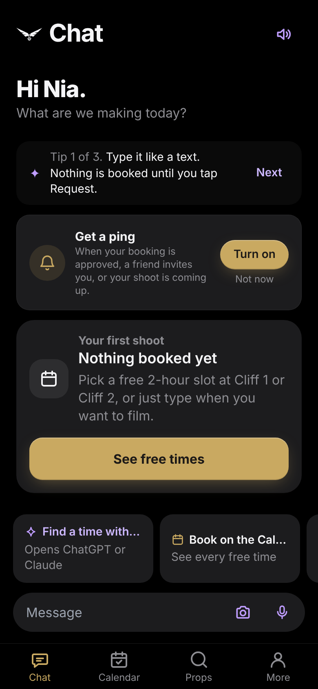
Why do I only see Props and Me? ("Props only")
Some creators start on Props only: a sneak peek while booking opens up step by step. The owner switches people to the full app a few at a time. Nothing to do on your side.
- You can search the whole closet on Props and open any prop.
- You can tap Something wrong? Suggest an edit on a prop.
- You can ask ✦ AI which props fit a video idea (it suggests props to look at; no booking).
- You can say yes or no when someone invites you into their video (the card shows on Props).
- You can't book filming time or send prop requests yet. Friends can still book a slot for you.
Get notifications on my phone
Notifications tell you when your booking is approved, a friend books you or invites you, your props are ready, and when it's time to check in. Turn them on once per phone.
- iPhone only: first add the app to your Home Screen (see above) and open it from that icon.
- Tap Turn on on the Get a ping card in the Chat, or go to More → Notifications → Turn on.
- Tap Allow when your phone asks.
- Tap Send me a test to check it works.
Use the chat and the ✦ AI
Type what you want, like a text to a friend. The chat shows the right card or button. Nothing is booked, cancelled or sent until you tap.
Just ask the app for what I need
The Chat understands normal words, slang and typos. It answers with real free times, props, or your shoots, and a button to tap.
- Open the Chat tab.
- Type in the Message box at the bottom (or tap a suggestion card above it).
- Read the answer and tap the button you want (for example Request).
- Tap one of the small follow-up chips to narrow it ("Only Cliff 2", "Anything earlier?").
Try: Thursday Cliff 1 at 5pm
props for a séance video
is my shoot approved?
how do I return gear?
the 5pm one,
the second one,
yes book it. It works in French too.
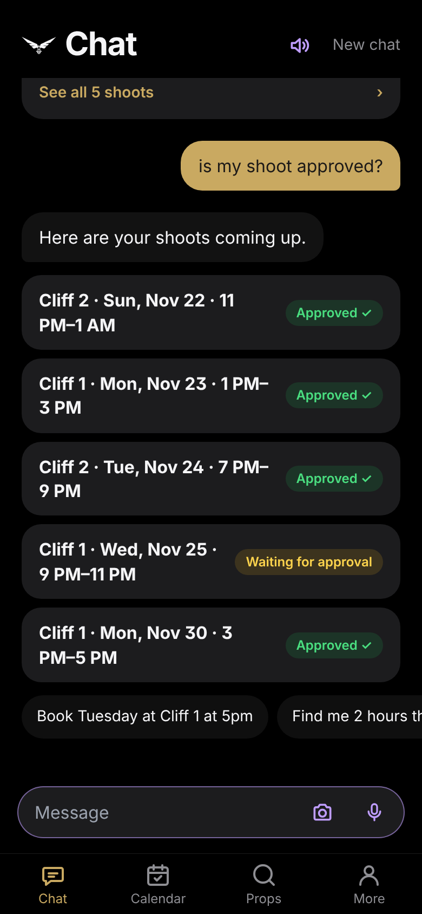
What can the chat do, and what can't it?
It's the app's AI assistant, not a person.
- It can: find free times, suggest props for an idea, show your shoots and requests, start a return, report broken things, explain how the app works.
- It can't: book, cancel or send anything by itself. You always tap to confirm, and the team still approves bookings.
- Only the cards are the truth. If a card says Requested ✓ or Approved ✓, it's done. The chat's words alone never mean it's booked.
- It doesn't know door codes, Wi-Fi or house problems. Message the equipment team (Maanik) for those.
Ask for a time and props in one message
One message, one card: the best free time plus props that are free that day, already ticked.
- Type both in one message.
- On the gold card, untick any prop you don't want (tap a prop to see it).
- Tap Do it. It asks for the time and sends the ticked props for that shoot.
- Want to pick yourself? Tap Change something to see the times and props separately.
Type: Thursday 5pm at Cliff 1 with Kyle, I need a cop costume and handcuffs
Send the chat a photo, or talk instead of typing
Show it a picture of what you need and it finds the closest props. Talk with the mic and it reads its answer out loud.
- Tap the camera in the typing box and take or pick a photo (a screenshot works too).
- The chat says what it sees and shows the closest props. Tick the ones you want.
- To talk, tap the mic and speak. Tap it again to stop.
- Don't want answers read aloud? Tap the speaker at the top of the chat.
Start the chat fresh (or pick up where I left off)
The chat remembers your last messages on this phone for 7 days. They show under "Earlier". Old free times show as plain text, so ask again for what's free now.
- To clear it, tap New chat at the top.
Book a time to film
Houses are Cliff 1 (2375 Cliff Road) and Cliff 2 (2371 Cliff Road). They're booked in 2-hour slots from 7 AM to 1 AM, and a booking takes the whole house. Every booking is a request the equipment team approves.
See when the houses are free
The Calendar tab shows a month. Each day says how many 2-hour spots are free.
- Tap Calendar.
- Pick Cliff 1, Cliff 2 or All (both houses side by side) above the month.
- Read the days: green = lots free, amber = a few, grey = full. Your own filming days are gold. Today has a white circle.
- A small lock on a Cliff 1 day = priority day (see below). A blue "C2: 3" = Cliff 1 is full but Cliff 2 still has 3 free.
- Use ‹ and › to change month.

Book a 2-hour slot at a house
Your time is held for you right away (dashed amber, "Waiting for approval") while the equipment team checks it. You get a notification when it's approved.
- Tap Calendar, then tap a day.
- The day opens with both houses hour by hour. Tap a gold Free time.
- Under How long do you need? leave 2 h · 1 slot.
- Tap Request this time.
Or just type in the chat: Thursday at Cliff 1 at 5pm
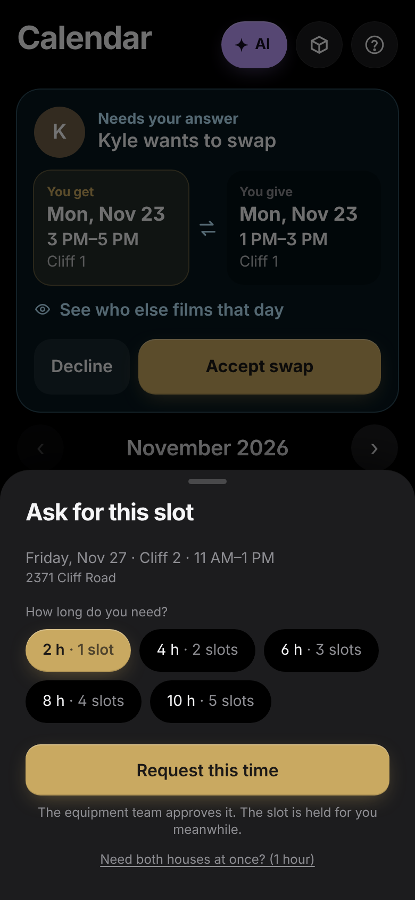
See every time on one day
Tapping a day shows Cliff 1 and Cliff 2 side by side, from 7 AM to 11 PM starts.
- Gold Free = you can ask for it.
- A name = someone has it. Dashed amber = someone asked and is waiting for approval.
- "Guideline required" = Cliff 1 on a priority day: you'll need a filming guideline PDF.
- "House free from 2 PM" = a short block (like cleaners) ends early, so you can start early.
- Book Offsite at the bottom = shooting somewhere else.

Find the next free time quickly
Say what you need and the chat shows real free times, soonest first.
- Type in the Chat, or on Calendar tap Or ask AI to find a time.
- Tap Request on the time you want.
Try: 2 hours next week, evenings
soonest slot at Cliff 2
next sat
Film for longer than 2 hours
Each creator gets one house slot a day (Cliff 1 and Cliff 2 together). Longer blocks are for filming with friends: each person takes one slot, back to back.
- Filming with friends? Book back to back (next section).
- Really need more time yourself? Ask the schedule team (Maanik). They can book it for you.
- Offsite shoots don't count toward the one-a-day limit.
Book a shoot somewhere else (offsite)
Offsite shoots go on the schedule too, so props, gear and the team know about them. No house is held. You can pick any hours.
- Tap Calendar, tap the day.
- Scroll down and tap Book Offsite.
- Pick From and Until (half-hour steps) and fill in Where (an address or a Maps link).
- Tap Ask for this. The equipment team approves it.
Or type: shooting at the park Saturday 2 to 5
Use both houses at once
Possible for one hour only. It always goes to the equipment team for approval, and counts as your one booking that day.
- Tap a free time on the day sheet.
- Tap the small link Need both houses at once? (1 hour) under the button.
- Pick the first or second hour of that 2-hour time, then Ask for both houses.
Why is Thursday or Saturday at Cliff 1 locked?
Thursdays and Saturdays at Cliff 1 are priority days for the priority group (Main Channel, Stromedy Studios and a few creators). Slots nobody claimed open to everyone on the Sunday before at 6 PM.
- The lock shows until it opens. Check back after Sunday 6 PM.
- Once open, booking those Cliff 1 slots needs your filming guideline (a PDF), unless you're in the priority group.
- Cliff 2 on those days is first come, first served as usual.
Attach my filming guideline
Only needed for Cliff 1 on Thursdays and Saturdays if you're not in the priority group. The button says Add your guideline first until you do.
- Have your guideline saved as a PDF on your phone (under 20 MB).
- On the booking sheet, tap the guideline box and pick the PDF.
- Tap the request button. The team sees your guideline with the request.
Where are my 4 guaranteed Cliff 1 slots?
Every creator gets 4 Cliff 1 slots a month. The equipment team schedules them for you. They show up on your Calendar, in the Chat and in My shoots.
- You don't need to book them yourself.
- Want more? Book extra slots whenever they're free.
Get a time that's already taken
Join the waitlist. If the time opens up, it's held for you for 20 minutes.
- Tap the day on Calendar.
- Tap the bell next to the taken time. It turns gold and shows your place in line (#2).
- If it opens, you get a notification and a card in the Chat. Tap Confirm my slot within 20 minutes, or it goes to the next person.
- Tap the bell again to leave the list.
Or ask the chat for the exact time and tap Tell me if 5 PM opens
.
After you book
Waiting for approval, seeing your shoots, and what each status means.
Is my shoot approved?
Every creator booking is checked by the equipment team (Maanik) or an admin, so nobody overbooks. While you wait, the time is held for you and you can already add props.
- Waiting for approval / Waiting for OK: held for you, not final yet.
- Approved ✓: it's on the official schedule. You get a notification.
- Not approved: you see the reason and the time frees up.
- Ran out: nobody decided before it started, so it was dropped.
Type: is my shoot approved?
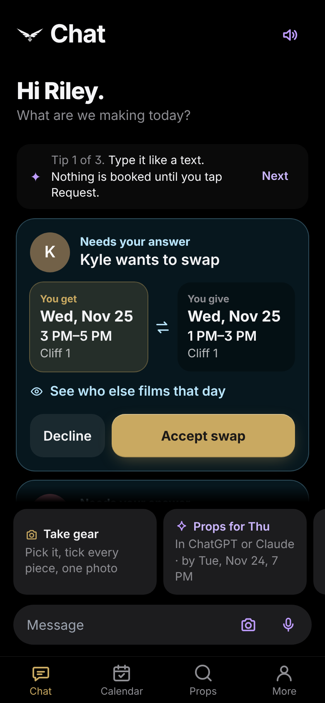
My request wasn't approved, or it ran out
A card in the Chat tells you why. Any props you added for it are let go.
- Read the reason on the card.
- Tap Find a new time and request another slot.
- Close the card when you're done.
See all my shoots
The Chat shows your next 3. My shoots shows all of them, soonest first, with what each one still needs.
- Go to More → My shoots (or tap See all shoots in the Chat).
- Coming up is split into Today, This week and Later. Past shows Filmed, No-show or Not checked in.
- A dashed + Props by… means you can still add props until that time.
- Tap a shoot to open it.
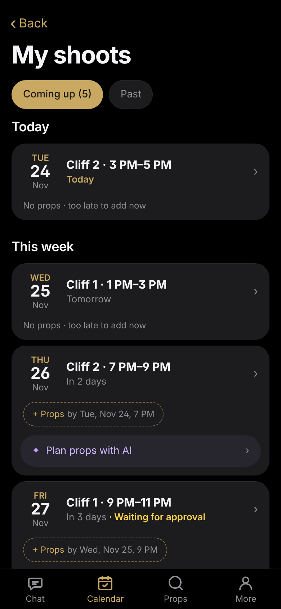
Open one shoot and see everything about it
The shoot page is the hub: status, time and place, props for it, who's in the video, and Move / Swap / Cancel.
- Tap the shoot in the Chat, on the Calendar, or in My shoots.
- Tap See in calendar to see the whole day (who films before and after you).
- Under Props & costumes you see the last time to add props and the last day for custom props. Tap + Add to add.
- Scroll down for Move, Swap, History and Cancel this shoot.

See my shoots in my phone's calendar
A private link puts your shoots (and videos you said yes to) in your calendar app. It updates by itself, within about an hour.
- Go to Calendar and scroll to the bottom.
- Tap My shoots in my phone's calendar.
- iPhone: tap the iPhone button. Google Calendar: tap Copy link and add it as a calendar "From URL".
The team moved or cancelled my shoot
Sometimes the schedule team needs a slot (for example for a priority booking or a repair). You get a Schedule change card and a notification. It never counts against you.
- Moved: your props move with it. Close the card with ×. You can still move it yourself, and cancelling it is free.
- Cancelled: tap Find a new time or Film offsite. No strike, and your next request goes first.
Move, swap or cancel a shoot
Free with at least 48 hours' notice. Closer than that, only a swap is safe.
Move my shoot to another time
Free with at least 48 hours' notice. Moving an approved shoot is a new request: you keep your old time until the team approves the new one.
- Open the shoot (Chat, Calendar or My shoots).
- Tap Move.
- Pick a free time and tap Ask for this.
Or type: move my Thursday shoot
Swap times with another creator
A swap never counts against anyone, even inside 48 hours. When they accept, both shoots switch at once.
- Open your shoot and tap Swap, then pick their booking. Or tap someone's slot on the day sheet → Ask to swap.
- They get a blue Needs your answer card. You can Withdraw while you wait.
Someone wants to swap with me
A blue Needs your answer card shows what you get and what you give.
- Tap See who else films that day to preview the day if you accept.
- Tap Accept swap or Decline.
Cancel my shoot
Cancelling also cancels the shoot's props requests, and the slot opens to everyone.
- Open the shoot.
- Tap Cancel this shoot at the bottom.
- Tap Yes, cancel (or Keep it).
Or type: cancel my next shoot
Will cancelling give me a strike?
Cancelling an approved shoot less than 48 hours before it starts counts as a no-show (a strike). The button then says Cancel (counts as a no-show).
Cancelling is always free when:
- it's 48 hours or more before the start,
- it's still a request waiting for approval,
- you booked it less than 10 minutes ago,
- you booked it less than 24 hours before it starts,
- the schedule team moved it for you.
Get props and costumes
Book your time first, then add props to that shoot. Props from the closet close 48 hours before your shoot starts. Browsing is open any time.
Look for a prop or costume
The Props tab has every prop and costume with photos. Popular props come first.
- Tap Props.
- Type in the search box. It also finds related words ("president" finds a Lincoln mask).
- Tap a category chip, or Status to filter (or order A to Z).
- Tap a photo to open the prop.
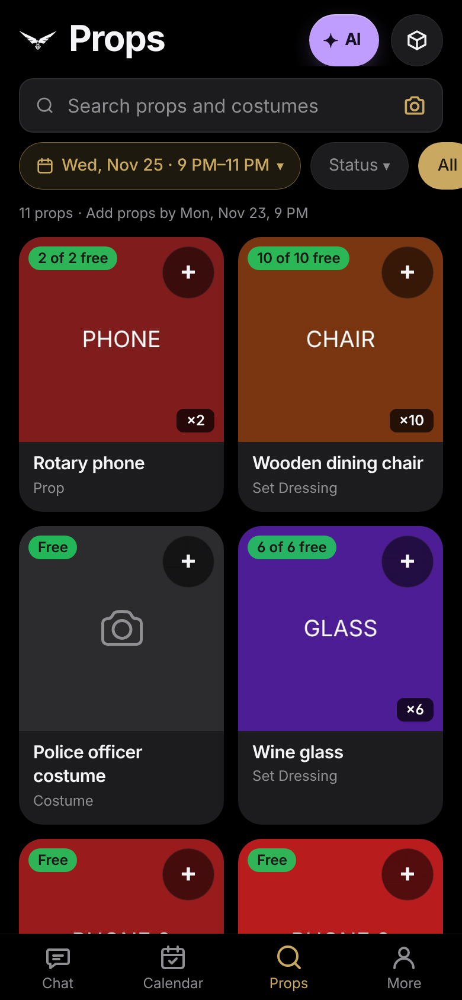
Find a prop from a photo
Got a reference picture? The app finds props that look like it.
- On Props, tap the camera in the search box.
- Take a photo or pick one (a screenshot works).
- The closest props show under Looks like your photo. Tap Clear to go back.
Get prop ideas for my video
Describe your video and the AI suggests props we have, grouped by scene, with why each fits. Always check each one.
- Tap ✦ AI or type in the Chat.
- Describe the idea.
- Tick the props you like, then tap Add N to a shoot and pick the shoot (or book a new one for them).
- Want more? Tap ✦ More like these.
Try: props for a séance video
a cop pulls over a pizza guy
Check a prop before I ask for it
The prop page shows photos, how many we have, condition, notes and which days it's free.
- Tap a prop's photo on Props.
- Tap the big photo to zoom in.
- Check the availability calendar: your shoot day has a gold box.
- Scroll down for Booked together with this and Similar props.
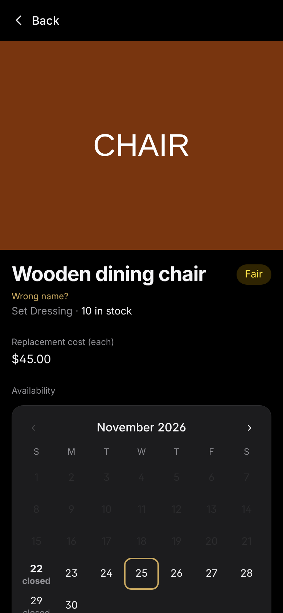
Add props to my shoot
Props always belong to a shoot. Adding only puts them in your basket on your phone. Nothing reaches the arts department until you send.
- On Props, check the chip at the top shows the right shoot. Tap it to change.
- Tap + on a photo. Or open the prop, set How many? and tap Add to this shoot.
- Tap Review on the gold bar at the bottom (or Review shoot) when you're done.
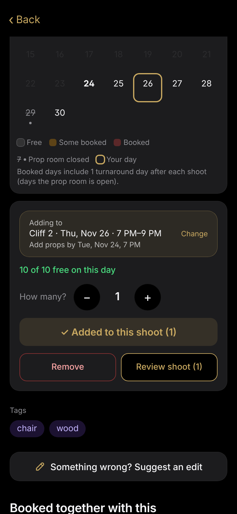
Send my props request to the arts department
Until you send, the props are only on your phone. An amber "Not sent yet" card reminds you.
- Tap Review on the gold bar (or the Not sent yet card).
- Check Adding to shows the right shoot.
- Type the Shoot or video name (required). Add notes for the arts department if you want.
- Change amounts with − +, or tap × to remove.
- Tap Send the props. The button tells you if something is missing.
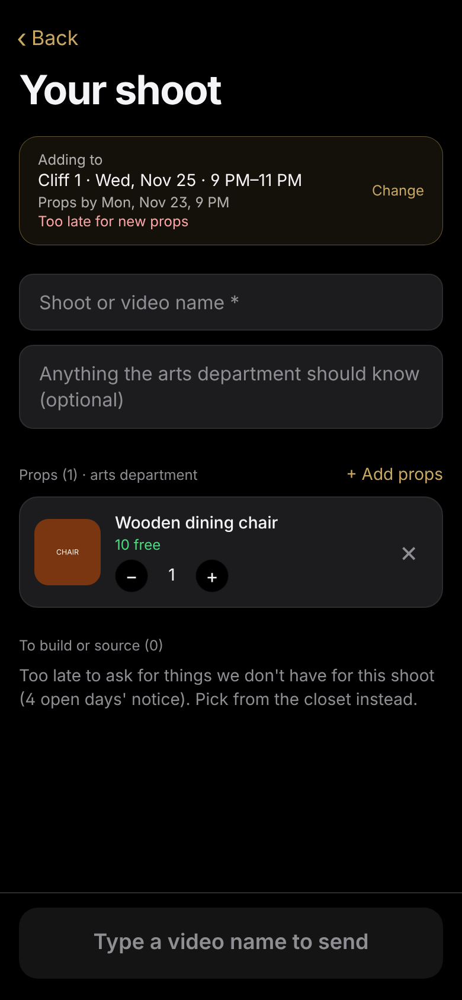
Why can't I add props any more?
Props from the closet close 48 hours before your shoot starts (clock hours; Sundays count). After that the + buttons disappear for that shoot.
- Your shoot page and the bar on Props show the exact time: "Props by Mon, Nov 23, 9 PM".
- Too late? Ask the arts department directly, or pick another shoot.
- Your prop requests are also paused if you have 2 strikes (see Strikes).
- Props from an earlier shoot still not returned? Bring them back first.
Ask for something we don't have
The arts department can try to make or find it. It needs at least 4 open days before the shoot (Sundays don't count), and there is no guaranteed date.
- On the review screen, tap Request something we don't have.
- Describe it, say how many, and add a reference photo if you can.
- Send your request.
- Then message the arts department on Slack to sort out the details and when it can be ready.
Tell the arts team a prop's details are wrong
- Open the prop.
- Tap Wrong name? under the name, or Something wrong? Suggest an edit further down.
- Say what's wrong (add a photo if it helps) and send. You'll see if it was applied.
Follow, change, pick up and return props
After you send: track it, change it, sign for it at pickup, and bring it back with a photo.
See where my props request is
Each shoot is one card, with a bar for each request: Requested → Being picked → Packed → Picked up → Returned.
- Go to More → My requests, or tap the box button next to ✦ AI.
- Upcoming shows current ones, Past the rest.
- Tap a request to see it.
Or type: are my props ready?
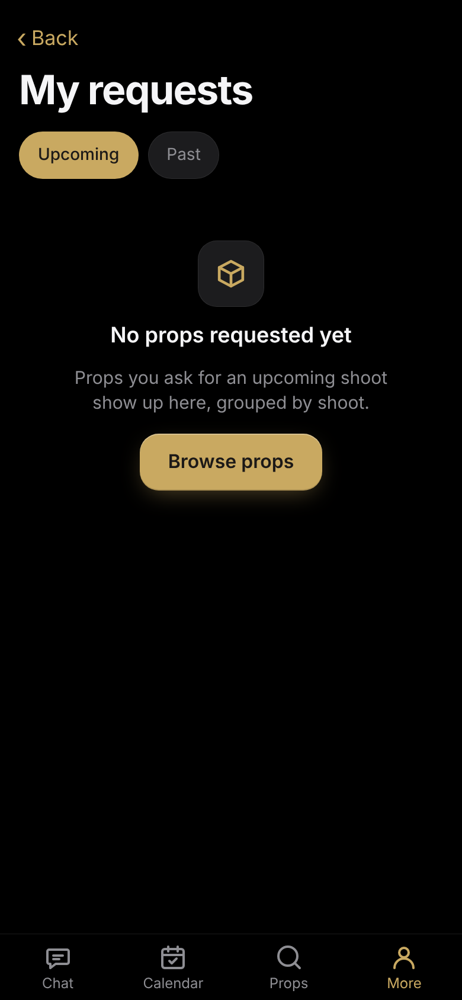
Change a request I already sent
You can change it while it still says Requested (before the arts department starts picking). New props still need the 48-hour notice.
- Open the request (My requests, or from the shoot page).
- Tap Change.
- Use − +, remove things, or search the closet to add (See all results opens the whole closet).
- Tap Save changes.
Pick up my props
When they're packed you get a notification. Pickup is always the same place. Only the creator who booked can sign.
- Open the request (it says Packed & ready).
- Check everything is there.
- Tap ✓ I've got everything.
- Something isn't there? Tap Something's missing, tap the missing props, add a note, then confirm.
Return my props
Props are due back the night of the shoot. They count as late from 10 AM on the next open day.
- In My requests, tap Return it (or type
bringing the props back
in the Chat). - Tick what's coming back. Untick anything you're keeping for now.
- Answer Anything broken, damaged or missing? (tap the prop + a few words, or No, all good).
- Take one photo of everything where you left it.
- Tap Send the return. The arts department then checks each prop in.
Return props and gear together
One flow, one photo for everything from a shoot.
- Tap Return everything on the shoot's card in My requests (or on the card in the Chat).
- Tick what's coming back, answer the questions (broken? charging case plugged in? who used the gear?).
- Take one photo, then tap Return all.
Take and return gear
Gear (cameras, lights, mics, drones) is not booked ahead. It's first come, first served on your shoot day.
Take gear for my shoot
From an hour before your shoot until it ends, you take what's free. It's yours until the shoot ends.
- In the Chat, tap the Take gear card above the typing box (it shows on your shoot day).
- Tap + on what you're taking (kits first, then single items: pick how many).
- Tap Take it on the gold bar.
- Tick every piece. Tap Missing? for anything that isn't there.
- Take one photo, then tap Take it.
Or type: taking the FX3

When is gear due back, and is there a late fee?
- At the houses: due when your shoot ends (the next person may need it).
- Offsite: due by the end of the day (midnight).
- It counts as late 30 minutes after that.
- Company rule: late gear carries a fee of 10% of its value, on the last person who had it. Each kit's page shows what it's worth. Every late return is recorded. Admins can excuse real exceptions.
- With late gear out, you can't take more until it's back.
Return gear
One photo of everything in the case, with batteries charging. The equipment team then checks every piece.
- Tap Bring gear back in the Chat (or Return it in My requests).
- Tick what's coming back.
- Answer Anything broken, damaged or missing?
- Answer Is the charging case plugged in?
- Shared gear? Tick Who used this gear?
- Take one photo of everything, then send.
Or type: returning the camera
I broke or lost something (gear or props)
Tell the team right away. Reporting protects you.
- Type it in the Chat.
- Pick the piece and say what happened.
- Tap send. The team is told at once and you see Reported ✓.
Type: the tripod is broken
or a battery is missing
Pass gear I have to another creator
Someone needs it right now? Hand it over in the app so it's on them, not you.
- Open the gear (My requests → the gear).
- Tap Someone else needs it now? Hand it over.
- Search for the person, pick until when they need it, tick who used it, and confirm.
- They do the normal pickup check (tick every piece).
On the shoot day
Check in when you arrive, report the slot before you if needed, and wrap when you're done.
Check in
Check-in opens 15 minutes before your slot. You get a notification and a gold check-in card at the top of the Chat.
- Open the Chat.
- Tap Selfie on the check-in card and take one selfie.
- If someone filmed right before you, tap All good or Report it. You're only checked in after you tap one.
Or type: I'm here
The people before me ran over or left a mess
Report it when you check in. The schedule team reviews every report.
- On the check-in card, tap Report it.
- Tap the mess option and take a photo, and/or pick how many minutes they ran over.
- Write a line about what happened, then send.
Wrap my shoot
- On the Filming now card in the Chat, type what you filmed.
- Tap Wrap. The card shows Wrapped ✓.
- Bring back props and gear (see the return sections).
Or type: we're done
I forgot to check in
You have 12 hours after your slot ends to explain. Then the schedule team decides whether it counts as filmed or a no-show.
- Tap Explain what happened on the red card in the Chat (it shows a countdown), or open the shoot.
- Write what happened and send.
I'm running late, or there's a problem at the house
The app has no door codes or Wi-Fi passwords.
- Message the equipment team (Maanik) directly for door codes, keys, Wi-Fi, or house problems.
- On Sundays the crew is off, so you run the shoot yourself.
Film with friends and video invites
Book back-to-back slots together, and tell people when they need to be in your video.
Film with friends, back to back
One slot per person, all requested together as one booking. Friends don't need to confirm, so only add people who will really be there. They're told.
- Tap Calendar, a day, then a gold time.
- Under How long do you need? pick one slot per person (3 people = 6 h · 3 slots).
- Tap each empty slot (+ Add who's filming) and search a friend by name or channel. "Usually films with" shortcuts show first.
- You're in one slot. Tap Change → Move me to this slot to switch.
- Leave In each other's videos ticked if you're on camera together.
- Tap the button, for example Request 6 hours · 3 people.
Or type: Friday at Cliff 2 with Kyle and Alex

Book a slot for a friend who isn't on the app
- When picking who's filming in a slot, type their name.
- Tap Add "Name" (marked "Not on the app yet").
- Their slot is booked under their name. They get no notifications, so tell them yourself.
A friend booked a slot for me
Nothing to do: it's already yours (or requested, if it's waiting for approval). You get a notification and it shows in your shoots.
- Can't make it? Cancel it from the shoot, or ask the friend to cancel it.
- You still check in for your own slot.
Tell people they're in my video
Invite the people who'll be on camera. Once they say yes, your shoot shows in their app with reminders the night before and an hour before your start time.
- Open your shoot.
- Under Who's in this video? tap + Invite.
- Pick the people (anyone on the app, Props only too).
- The list shows Waiting / In ✓ / Can't make it. Tap × to take someone out.
Or type: invite Kyle to my Saturday shoot
Someone invited me into their video
You get a notification and a "wants you in their video" card. Everyone shows up at the shoot's start time.
- Tap I'm in or Can't make it on the card in the Chat (Props-only creators see it on Props).
- Once you say yes, it shows in your Coming up list, on your calendar (blue edge on that day), in your phone calendar link, and in More → Videos you're in.
- Can't go any more? Tap Can't go next to it. They're told.
Or type: am I in any videos?
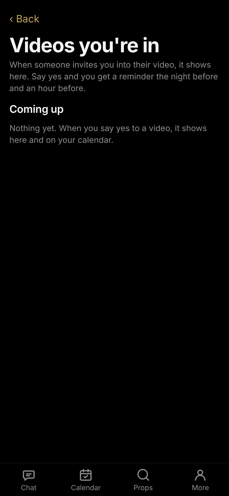
Strikes, your profile and getting help
How strikes work, setting up your profile, and what to do when the app itself misbehaves.
What gets me a strike, and what happens?
A strike comes from:
- a no-show (no check-in and the team marks it a no-show),
- cancelling an approved shoot inside 48 hours (unless one of the free cases applies),
- a report about you that the team upholds (mess, running over),
- a strike an admin gives you, always with a reason.
2 strikes in 30 days pause your prop requests for 14 days. You can still book house time and take gear. The team can lift a pause.
- See your strikes: More → the strikes card ("No strikes", "1 strike" or "Props paused until…").
Or type: do I have strikes?
Set up my profile (photo, channel, birthday)
Your photo and channel name show on the schedule and to the team. On your birthday, the app throws you a little party and tells the team.
- Go to More.
- Tap Change photo (your Google photo is used until you do).
- Type your Channel name (like @yourchannel) and save.
- Pick your Birthday month and day (no year) and save. Remove it any time.
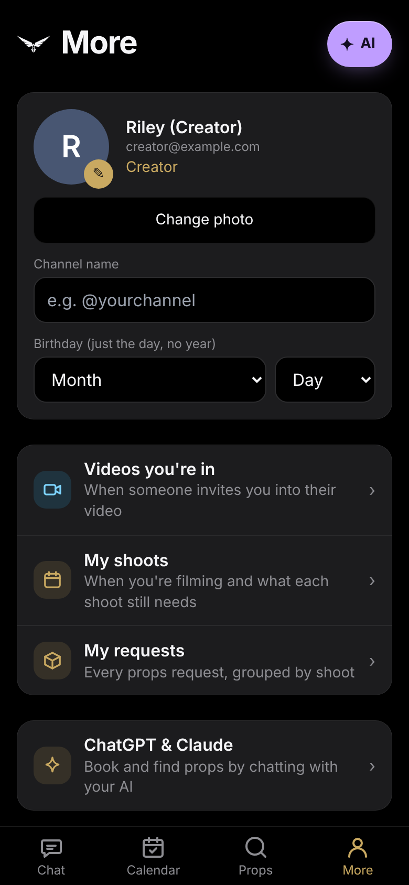
The app is broken or shows something wrong
This is for problems with the app itself. Broken gear or props go to the team through the Chat instead.
- Tap Report a problem (in More, at the top of Help, or type
the app is broken
in the Chat). - Go to the screen where it happened and tap Report this screen. The app takes a screenshot.
- Pick Something broke, looks wrong or is missing, and say what happened.
- Tap Send report.
Find an answer or the house rules
- Go to More → Help (or the ? button on Calendar).
- Type a word in the search box ("cancel", "check in").
- Tap All the house rules at the bottom for How it works.
Who to ask: bookings and schedule: the equipment team (Maanik). Props and costumes: the arts department. Gear: the equipment team. Strikes, pauses, inviting someone: an admin. The app itself: Report a problem.
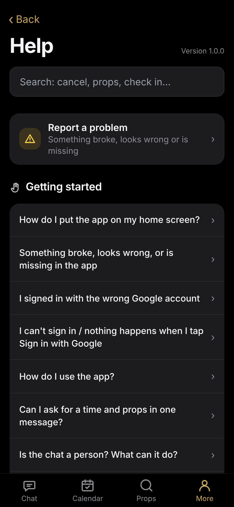
Quick answers
How long is a slot, and when can I film?
2 hours. Starts at 7, 9 and 11 AM, 1, 3, 5, 7, 9 and 11 PM (the last one ends at 1 AM). A booking takes the whole house.
Is my booking final when I tap Request?
No. It's held for you and the equipment team or an admin approves it. You get a notification. If nobody decides before it starts, it's dropped.
How many slots can I book a day?
One house slot a day, Cliff 1 and Cliff 2 together. Offsite shoots don't count. Need more? Ask the schedule team.
How far ahead do I need to ask for props?
Props from the closet: 48 hours before your shoot starts (clock hours, Sundays count). Custom props to make or find: at least 4 open days (Sundays don't count), with no guaranteed date; sort the details with the arts department on Slack.
Can I book gear ahead?
No. Gear is first come, first served. On your shoot day, from an hour before, take what's free with the Take gear card in the Chat.
When is gear late, and how much is the fee?
At the houses gear is due when your shoot ends, offsite by midnight. It's late 30 minutes after that. The fee is 10% of the gear's value, on the last person who had it. Admins can excuse exceptions.
When are props late?
From 10 AM on the next open day after your shoot. It's logged (no fee), and you can't send new props requests until they're back.
Can I cancel without a strike?
Yes, with 48 hours' notice, within 10 minutes of booking, if it's still a request, if you booked it less than 24 hours ahead, or if the team moved it. Otherwise it counts as a no-show. A swap never counts.
How many strikes until I'm paused?
2 strikes in 30 days pause your prop requests for 14 days. You can still book house time and take gear.
Do my friends have to confirm a back-to-back booking?
No. Their slots are requested with yours and they're told. Only add people who will really be there.
When does check-in open?
15 minutes before your slot. Take one selfie on the card in the Chat.
I missed my check-in. How long do I have to explain?
12 hours after your slot ends. Then the schedule team decides.
Do I need a guideline PDF?
Only for Cliff 1 on Thursdays and Saturdays, if you're not in the priority group.
Why is Cliff 1 locked on Thursday and Saturday?
They're priority days. Unclaimed slots open to everyone on the Sunday before at 6 PM.
Is there crew on Sundays?
No. Sundays are open to everyone, first come, first served, and you run the shoot yourself. Taking gear works the same.
Does the chat book things by itself?
Never. It shows cards and buttons; nothing happens until you tap. Only a card saying Requested ✓ or Approved ✓ means it went through.
Where are the props I added? They're not sent.
Added props stay on your phone until you send them. Look for the amber "Not sent yet" card in the Chat, or tap Review on the gold bar in Props.
I'm on "Props only". When can I book?
When the owner switches you to the full app. Nothing to do on your side. Meanwhile you can search props, ask the AI for ideas and answer video invites.
Notifications don't show on my iPhone.
Add the app to your Home Screen, open it from that icon, then More → Notifications → Turn on and Send me a test. Check Settings → Notifications → Prime Capitol and turn Focus off.
Does a shoot I'm invited to count against me?
No. Being in someone's video means no check-in, no strikes and no props or gear on you. It's just so you know where to be.